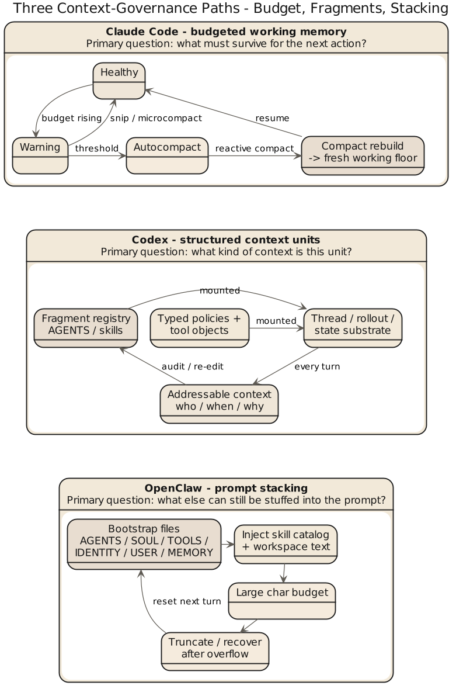

第 8 章 如果你要自己做：该向谁学，先学什么
8.1 比较的最终用途是少走弯路
最没意思的比较文结尾是把读者推回消费主义姿态——二选一。工程系统不是耳机，不靠横评下单。真正有用的问题是：自己做一套 harness 或重构现有 agent，先学谁的哪一部分。Claude Code 和 Codex 给出的是两种起手式，不是两份答案。Claude Code 提醒你：别把运行时问题想得太文雅——真正拖垮系统的是 query loop 里的脏活（工具结果收口、上下文膨胀、中断恢复、子代理清理、验证独立、失败熔断），轻视它们就会得到一个看着聪明、用着费命的系统。Codex 提醒你：别把控制层做成一团心照不宣——instruction 来源、tool schema、approval policy、thread state、hook event、skills 资产越早显式化越好治理，指望运行时临场发挥代替制度的系统，最后都像口头约定搭起来的棚子。
8.2 三种常见团队，三种起手方向
第一种：已经有 agent 原型，但长会话经常失控
这种团队通常最需要先学 Claude Code。
因为他们的问题多半不在“控制面定义不清”，而在系统活不长。常见症状包括：
- 上下文越来越乱
- 工具调用链断裂
- 中断后状态说不清
- 子代理跑完以后没人收口
- 验证变成随口一说
这时候最该补的是主循环纪律，而不是更多配置项。先把 runtime heartbeat 做稳，再谈制度美学。
第二种：已经有不少规则，但规则来源过散、权限边界不清
这种团队通常更该先学 Codex。
因为他们的问题不在现场活不过去，而在系统越来越难治理。常见症状包括：
- 本地规则四处散落
- 哪些约束进了 prompt，哪些进了工具，没人说得清
- 审批逻辑混在代码里，难以解释
- 多种扩展能力接进来以后，边界越来越模糊
这时候最需要的，是把控制层显式化。先把 instruction、tool、policy、thread 这些概念定义清楚，再让 runtime 在里面工作。
第三种：还没有成型系统，准备从零开始
这种团队最危险，因为最容易同时羡慕两边的优点，然后把自己搞成折中失败品。
更稳妥的路线通常是：
- 先选一个主矛盾
- 先围绕主矛盾设计主骨架
- 另一边只补最低限度，不要一口气学全
要是你的第一阶段主要风险是“模型会乱来”，那就先做 Claude Code 式的 runtime discipline。
要是你的第一阶段主要风险是“团队会失去秩序”，那就先做 Codex 式的显式控制层。
最怕的是两边都想一次学全，结果既没有扎实主循环，也没有清楚控制面。
三类团队的分阶段清单 (builder checklists)
# 类型一：原型已在，长会话失控（先学 Claude Code）
- [ ] Week 1: 明确主循环状态集 {messages, toolUseContext, compactTracking, turnCount}
- [ ] Week 1: 每个 tool_use 闭账或 synthetic 兜底；abort 路径落地
- [ ] Week 2: 上下文治理三件套：memory / collapse / autocompact 阈值表固化
- [ ] Week 2: 验证独立于实现（verifier 不等于 implementer）
- [ ] Week 3: 子代理生命周期 SubagentStart/Stop 事件可观测
Gate: 连续 24h 会话无 token 熔断、无孤儿子代理、无 tool_result 泄漏
# 类型二：规则已多，来源散乱、边界不清（先学 Codex）
- [ ] Week 1: 所有 instruction 进入 fragment 化：marker、source、precedence 三要素
- [ ] Week 1: 工具 schema 化，additional_properties=false
- [ ] Week 2: approval policy 抽为 rule，deny/ask/allow 可单独评估
- [ ] Week 2: thread.id / rollout 建立，turn 级 {approvalPolicy, sandboxMode} 显式传参
- [ ] Week 3: hook 事件拆 pre/post/session_start/stop，skill 资产 fingerprint 安装
Gate: 任何规则变更可通过 PR 直接 diff，无需运行时改代码
# 类型三：从零开始（选一个主矛盾再动手）
- [ ] Week 1: 声明主矛盾——"模型乱来" or "团队失序"
- [ ] Week 1: 定义最小权限模型（高危动作 deny/ask 清单）
- [ ] Week 2: 主矛盾侧骨架立起（loop 或 fragment+thread 二选一）
- [ ] Week 3: 另一侧只补最小必要（恢复路径 or 基本 hook）
- [ ] Week 4: 引入 1–2 个 skill/工具，验证闭环
Gate: 新成员能沿清单推进，不需要原作者口传8.3 什么该学 Claude Code，什么该学 Codex
优先学 Claude Code：query loop 的状态心智、compact 与上下文治理、工具编排与中断处理、子代理生命周期和验证独立、把失败路径当主路径设计。优先学 Codex：instruction fragment 化、tool schema 化、approval/policy 的显式表达、thread/rollout/state 的基础设施化、hook 事件和 skills 资产管理。这不是折衷——前提是你得知道自己在学什么。学习的理由应该是那一块正好补你的短板，而不是因为别人已经做了。
如果把上一册的上下文治理判断带进来，再看第三方 harness，容易识别一种常见但代价很高的路线：它不把上下文拆成不同寿命、不同职责、不同入口成本的单元，而是把大量 bootstrap 文件、技能说明、身份设定和工作区文本尽量塞进 prompt，溢出时靠截断、compact 和恢复链补锅。这类系统表面上也有 memory、skills、compact、上限控制，治理主轴仍是"先注入，再抢救"。上下文主要靠堆叠文本组织时，token 浪费只是第一层代价，更麻烦的是语义信号稀释——模型看到了很多东西，却不一定更清楚下一步该抓哪一类工作语义。
三条路线一句话总结：Claude Code 把上下文当工作内存来经营（先想什么该保住、什么该压缩）；Codex 把上下文当结构化单元来治理（先想来源类型、作用域和状态承接）；OpenClaw 这一类则把上下文当 prompt 容器来扩容（先想还能再塞什么，超了再说）。这也是很多团队起初觉得这种路线"信息更全"，长会话多代理复杂任务时却同时抱怨两件事——token 烧得快、效果没随上下文变胖而稳定提升。它解决的是装进去多少，不是继续工作真正需要保住什么。

8.4 一个危险误区：把"显式"与"灵活"误认为天然对立
做系统的人常有一种偷懒的对立法：一说显式控制层就觉得系统会太重太慢；一说运行时灵活就觉得可以先靠经验做，结构以后再说。都不高明。显式不必然僵硬，灵活也不必然混乱。真正的问题是——你有没有清楚定义"哪些必须显式、哪些可以留给现场判断"。Claude Code 的长处不在排斥结构，而在知道哪些麻烦必须运行时正面处理；Codex 的长处不在排斥灵活，而在知道哪些边界不先讲清楚，后面任何灵活都会变成争议。好的第三种 harness 不折中平均，而明确区分：哪些规则必须先写死、哪些判断留给运行时、哪些状态必须持久化、哪些经验只在会话内暂存。
8.5 给后来者的一组顺序建议
从零开始做一套 harness，推荐这个顺序：(1) 高风险动作和最小权限模型；(2) 主循环或线程生命周期；(3) 上下文治理与恢复路径；(4) 技能、本地规则与 hook；(5) 多代理、平台化和复杂生态。顺序不性感，但大致符合事故发生的顺序。工程里的设计顺序，应该按事故出现的先后排，而不是按演示时的好看程度排。
8.6 本章结论
这一章只想留下一句朴素的话：
学 Claude Code，主要是学如何让系统在现场稳定运行；学 Codex，主要是学如何让系统在组织里长久维持秩序。
谁只学前者，容易变成经验过强、制度不足。
谁只学后者，容易变成制度漂亮、现场发虚。
真正值得做的，是根据自己的主矛盾决定先长哪根骨头，而不是选边站。